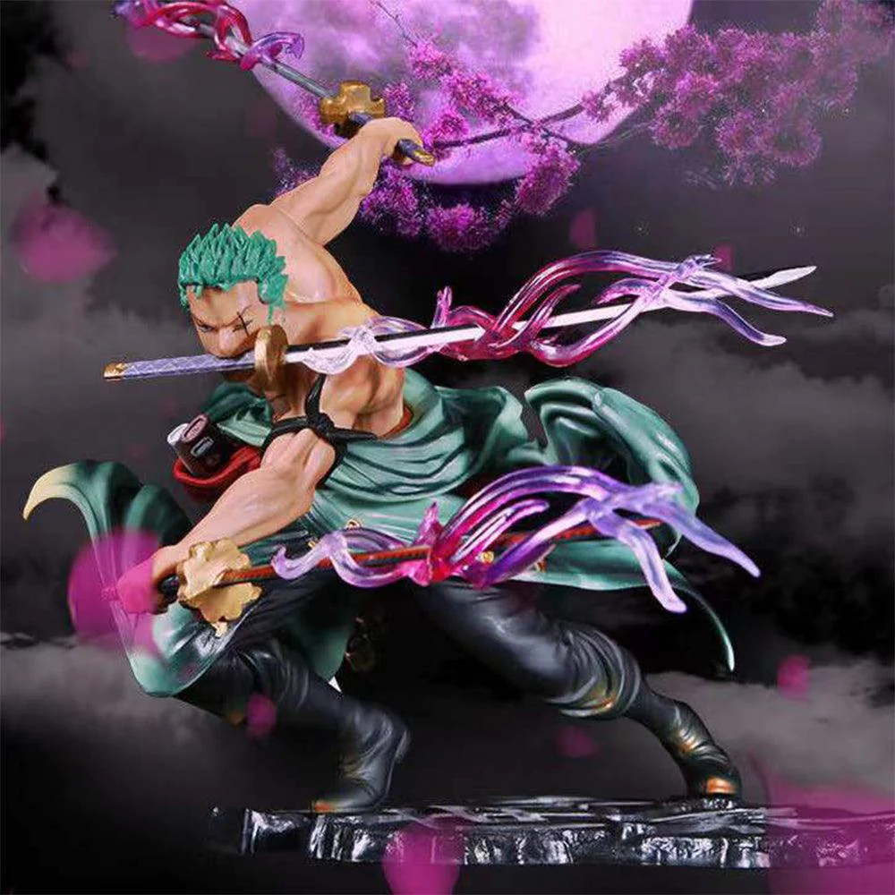

About Me
click Here
{{ folder }}
Kevin Anderson Taniongon

Card Title
Card Subtitle
I Kevin Anderson Taniongon, 20 years old pursuing a bachelor of Science Information Technology major in Service Management. I think of myself not just as a dreamer, but as a dream chaser.